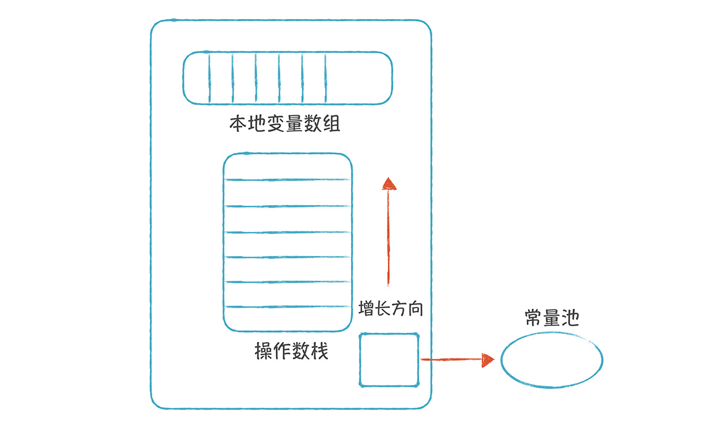
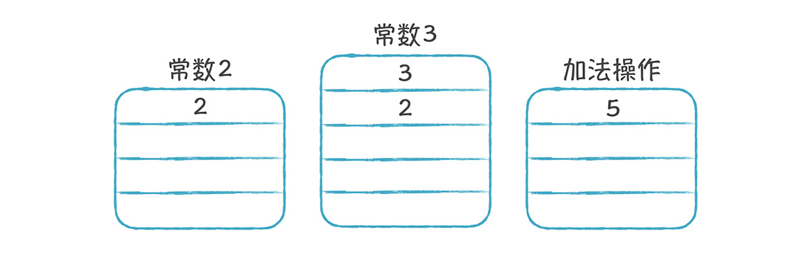
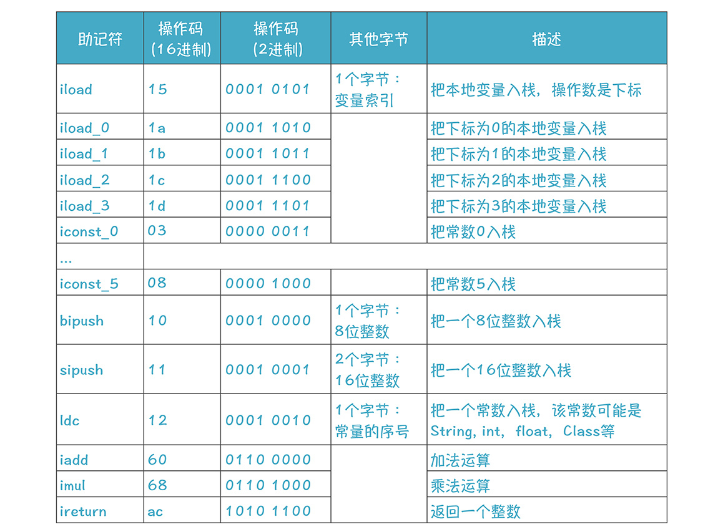
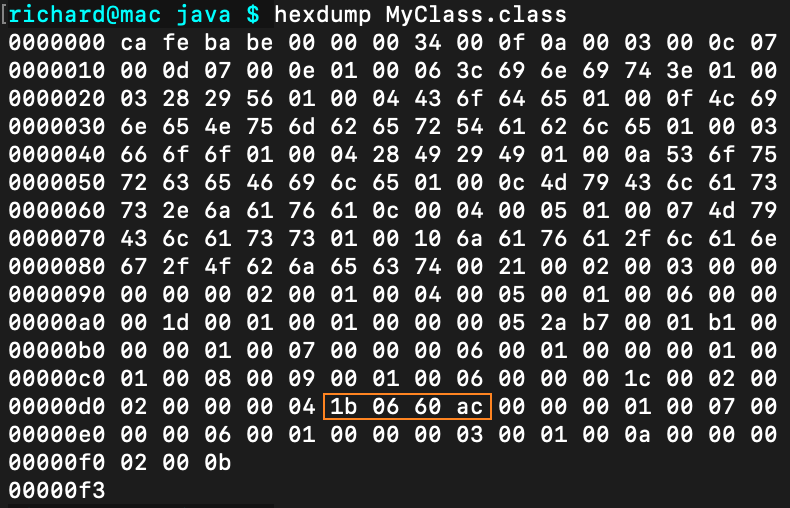
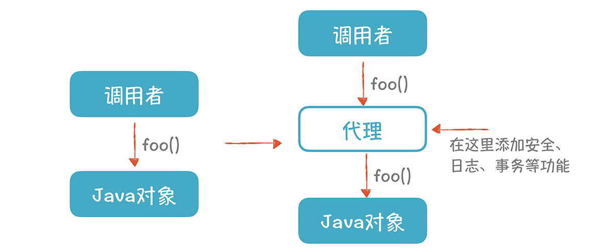

- 00 开篇词 为什么你要学习编译原理？.md.html
- 01 理解代码：编译器的前端技术.md.html
- 02 正则文法和有限自动机：纯手工打造词法分析器.md.html
- 03 语法分析（一）：纯手工打造公式计算器.md.html
- 04 语法分析（二）：解决二元表达式中的难点.md.html
- 05 语法分析（三）：实现一门简单的脚本语言.md.html
- 06 编译器前端工具（一）：用Antlr生成词法、语法分析器.md.html
- 07 编译器前端工具（二）：用Antlr重构脚本语言.md.html
- 08 作用域和生存期：实现块作用域和函数.md.html
- 09 面向对象：实现数据和方法的封装.md.html
- 10 闭包： 理解了原理，它就不反直觉了.md.html
- 11 语义分析（上）：如何建立一个完善的类型系统？.md.html
- 12 语义分析（下）：如何做上下文相关情况的处理？.md.html
- 13 继承和多态：面向对象运行期的动态特性.md.html
- 14 前端技术应用（一）：如何透明地支持数据库分库分表？.md.html
- 15 前端技术应用（二）：如何设计一个报表工具？.md.html
- 16 NFA和DFA：如何自己实现一个正则表达式工具？.md.html
- 17 First和Follow集合：用LL算法推演一个实例.md.html
- 18 移进和规约：用LR算法推演一个实例.md.html
- 19 案例总结与热点问题答疑：对于左递归的语法，为什么我的推导不是左递归的？.md.html
- 20 高效运行：编译器的后端技术.md.html
- 21 运行时机制：突破现象看本质，透过语法看运行时.md.html
- 22 生成汇编代码（一）：汇编语言其实不难学.md.html
- 23 生成汇编代码（二）：把脚本编译成可执行文件.md.html
- 24 中间代码：兼容不同的语言和硬件.md.html
- 25 后端技术的重用：LLVM不仅仅让你高效.md.html
- 26 生成IR：实现静态编译的语言.md.html
- 27 代码优化：为什么你的代码比他的更高效？.md.html
- 28 数据流分析：你写的程序，它更懂.md.html
- 29 目标代码的生成和优化（一）：如何适应各种硬件架构？.md.html
- 30 目标代码的生成和优化（二）：如何适应各种硬件架构？.md.html
- 31 内存计算：对海量数据做计算，到底可以有多快？.md.html
- 32 字节码生成：为什么Spring技术很强大？.md.html
- 33 垃圾收集：能否不停下整个世界？.md.html
- 34 运行时优化：即时编译的原理和作用.md.html
- 35 案例总结与热点问题答疑：后端部分真的比前端部分难吗？.md.html
- 36 当前技术的发展趋势以及其对编译技术的影响.md.html
- 37 云编程：云计算会如何改变编程模式？.md.html
- 38 元编程：一边写程序，一边写语言.md.html
- 加餐 汇编代码编程与栈帧管理.md.html
- 用户故事 因为热爱，所以坚持.md.html
- 第二季回归 这次，我们一起实战解析真实世界的编译器.md.html
- 结束语 用程序语言，推动这个世界的演化.md.html
- 捐赠
32 字节码生成：为什么Spring技术很强大？
Java程序员几乎都了解Spring。它的IoC（依赖反转）和AOP（面向切面编程）功能非常强大、易用。而它背后的字节码生成技术（在运行时，根据需要修改和生成Java字节码的技术）就是一项重要的支撑技术。
Java字节码能够在JVM（Java虚拟机）上解释执行，或即时编译执行。其实，除了Java，JVM上的Groovy、Kotlin、Closure、Scala等很多语言，也都需要生成字节码。另外，playscript也可以生成字节码，从而在JVM上高效地运行！
而且，字节码生成技术很有用。你可以用它将高级语言编译成字节码，还可以向原来的代码中注入新代码，来实现对性能的监测等功能。
目前，我就有一个实际项目的需求。我们的一个产品，需要一个规则引擎，解析自定义的DSL，进行规则的计算。这个规则引擎处理的数据量比较大，所以它的性能越高越好。因此，如果把DSL编译成字节码就最理想了。
既然字节码生成技术有很强的实用价值，那么本节课，我就带你掌握它。
我会先带你了解Java的虚拟机和字节码的指令，然后借助ASM这个工具，生成字节码，最后，再实现从AST编译成字节码。通过这样一个过程，你会加深对Java虚拟机的了解，掌握字节码生成技术，从而更加了解Spring的运行机制，甚至有能力编写这样的工具！
Java虚拟机和字节码
字节码是一种二进制格式的中间代码，它不是物理机器的目标代码，而是运行在Java虚拟机上，可以被解释执行和即时编译执行。
在讲后端技术时，我强调的都是，如何生成直接在计算机上运行的二进制代码，这比较符合C、C++、Go等静态编译型语言。但如果想要解释执行，除了直接解释执行AST以外，我没有讲其他解释执行技术。
而目前更常见的解释执行的语言，是采用虚拟机，其中最典型的就是JVM，它能够解释执行Java字节码。
而虚拟机的设计又有两种技术：一是基于栈的虚拟机；二是基于寄存器的虚拟机。
标准的JVM是基于栈的虚拟机（后面简称“栈机”）。
每一个线程都有一个JVM栈，每次调用一个方法都会生成一个栈桢，来支持这个方法的运行。栈桢里面又包含了本地变量数组（包括方法的参数和本地变量）、操作数栈和这个方法所用到的常数。这种栈桢的设计跟之前我们学过C语言的栈桢的结构，其实有很大的相似性，你可以通过21讲回顾一下。

栈机是基于操作数栈做计算的。以“2+3”的计算为例，只要把它转化成逆波兰表达式，“2 3 +”，然后按照顺序执行就可以了。也就是：先把2入栈，再把3入栈，再执行加法指令，这时，要从栈里弹出2个操作数做加法计算，再把结果压入栈。

你可以看出，栈机的加法指令，是不需要带操作数的，就是简单的“iadd”就行，这跟你之前学过的IR都不一样。为什么呢？因为操作数都在栈里，加法操作需要2个操作数，从栈里弹出2个元素就行了。
也就是说，指令的操作数是由栈确定的，我们不需要为每个操作数显式地指定存储位置，所以指令可以比较短，这是栈机的一个优点。
接下来，我们聊聊字节码的特点。
字节码是什么样子的呢？我编写了一个简单的类MyClass.java，其中的foo()方法实现了一个简单的加法计算，你可以看看它对应的字节码是怎样的：
public class MyClass {
public int foo(int a){
return a + 3;
}
}
在命令行终端敲入下面两行命令，生成文本格式的字节码文件：
javac MyClass.java
javap -v MyClass > MyClass.bc
打开MyClass.bc文件，你会看到下面的内容片段：
public int foo(int);
Code:
0: iload_1 //把下标为1的本地变量入栈
1: iconst_3 //把常数3入栈
2: iadd //执行加法操作
3: ireturn //返回
其中，foo()方法一共有四条指令，前三条指令是计算一个加法表达式a+3。这完全是按照逆波兰表达式的顺序来执行的：先把一个本地变量入栈，再把常数3入栈，再执行加法运算。
如果你细心的话，应该会发现：把参数a入栈的第一条指令，用的下标是1，而不是0。这是因为，每个方法的第一个参数（下标为0）是当前对象实例的引用（this）。
我提供了字节码中，一些常用的指令，增加你对字节码特点的直观认识，完整的指令集可以参见JVM的规格书：

其中，每个指令都是8位的，占一个字节，而且iload_0、iconst_0这种指令，甚至把操作数（变量的下标、常数的值）压缩进了操作码里，可以看出，字节码的设计很注重节省空间。
根据这些指令所对应的操作码的数值，MyClass.bc文件中，你所看到的那四行代码，变成二进制格式，就是下面的样子：

你可以用“hexdump MyClass.class”显示字节码文件的内容，从中可以发现这个片段（就是橙色框里的内容）：

现在，你已经初步了解了基于栈的虚拟机，与此对应的是基于寄存器的虚拟机。这类虚拟机的运行机制跟机器码的运行机制是差不多的，它的指令要显式地指出操作数的位置（寄存器或内存地址）。它的优势是：可以更充分地利用寄存器来保存中间值，从而可以进行更多的优化。
例如，当存在公共子表达式时，这个表达式的计算结果可以保存在某个寄存器中，另一个用到该公共子表达式的指令，就可以直接访问这个寄存器，不用再计算了。在栈机里是做不到这样的优化的，所以基于寄存器的虚拟机，性能可以更高。而它的典型代表，是Google公司为Android开发的Dalvik虚拟机和Lua语言的虚拟机。
这里你需要注意，栈机并不是不用寄存器，实际上，操作数栈是可以基于寄存器实现的，寄存器放不下的再溢出到内存里。只不过栈机的每条指令，只能操作栈顶部的几个操作数，所以也就没有办法访问其它寄存器，实现更多的优化。
现在，你应该对虚拟机以及字节码有了一定的了解了。那么，如何借助工具生成字节码呢？你可能会问了：为什么不纯手工生成字节码呢？当然可以，只不过借助工具会更快一些。
就像你生成LLVM的IR时，也曾获得了LLVM的API的帮助。所以，接下来我会带你认识ASM这个工具，并借助它为我们生成字节码。
字节码生成工具ASM
其实，有很多工具会帮我们生成字节码，比如Apache BCEL、Javassist等，选择ASM是因为它的性能比较高，并且它还被Spring等著名软件所采用。
ASM是一个开源的字节码生成工具。Grovvy语言就是用它来生成字节码的，它还能解析Java编译后生成的字节码，从而进行修改。
ASM解析字节码的过程，有点像XML的解析器解析XML的过程：先解析类，再解析类的成员，比如类的成员变量（Field）、类的方法（Mothod）。在方法里，又可以解析出一行行的指令。
你需要掌握两个核心的类的用法：
- ClassReader，用来解析字节码。
- ClassWriter，用来生成字节码。
这两个类如果配合起来用，就可以一边读入，做一定修改后再写出，从而实现对原来代码的修改。
我们先试验一下，用ClassWriter生成字节码，看看能不能生成一个跟前面示例代码中的MyClass一样的类（我们可以称呼这个类为MyClass2），里面也有一个一模一样的foo函数。相关代码参考genMyClass2()方法，这里只拿出其中一段看一下：
//////创建foo方法
MethodVisitor mv = cw.visitMethod(Opcodes.ACC_PUBLIC, "foo",
"(I)I", //括号中的是参数类型，括号后面的是返回值类型
null, null);
//添加参数a
mv.visitParameter("a", Opcodes.ACC_PUBLIC);
mv.visitVarInsn(Opcodes.ILOAD, 1); //iload_1
mv.visitInsn(Opcodes.ICONST_3); //iconst_3
mv.visitInsn(Opcodes.IADD); //iadd
mv.visitInsn(Opcodes.IRETURN); //ireturn
//设置操作数栈最大的帧数，以及最大的本地变量数
mv.visitMaxs(2,2);
//结束方法
mv.visitEnd();
从这个示例代码中，你会看到两个特点：
ClassWriter有visitClass、visitMethod这样的方法，以及ClassVisitor、MethodVistor这样的类。这是因为ClassWriter用了visitor模式来编程。你每一次调用visitXXX方法，就会创建相应的字节码对象，就像LLVM形成内存中的IR对象一样。
foo()方法里的指令，跟我们前面看到的字节码指令是一样的。
执行这个程序，就会生成MyClass2.class文件。
把MyClass2.class变成可读的文本格式之后，你可以看到它跟MyClass的字节码内容几乎是一样的，只有类名称不同。当然了，你还可以写一个程序调用MyClass2，验证一下它是否能够正常工作。
发现了吗？只要熟悉Java的字节码指令，在ASM的帮助下，你可以很方便地生成字节码！想要了解更多ASM的用法，可以参考它的一个技术指南。
既然你已经能生成字节码了，那么不如趁热打铁，把编译器前端生成的AST编译成字节码，在JVM上运行？因为这样，你就能从前端到后端，完整地实现一门基于JVM的语言了！
将AST编译成字节码
基于AST生成JVM的字节码的逻辑还是比较简单的，比生成针对物理机器的目标代码要简单得多，为什么这么说呢？主要有以下几个原因：
首先，你不用太关心指令选择的问题。针对AST中的每个运算，基本上都有唯一的字节码指令对应，你直白地翻译就可以了，不需要用到树覆盖这样的算法。
你也不需要关心寄存器的分配，因为JVM是使用操作数栈的；
指令重排序也不用考虑，因为指令的顺序是确定的，按照逆波兰表达式的顺序就可以了；
优化算法，你暂时也不用考虑。
按照这个思路，你可以在playscript-java中增加一个ByteCodeGen的类，针对少量的语言特性做一下字节码的生成。最后，我们再增加一点代码，能够加载并执行所生成的字节码。运行下面的命令，可以把bytecode.play示例代码编译并运行。
java play.PlayScript -bc bytecode.play
当然了，我们只实现了playscript的少量特性，不过，如果在这个基础上继续完善，你就可以逐步实现一门完整的，基于JVM的语言了。
Spring与字节码生成技术
我在开篇提到，Java程序员大部分都会使用Spring。Spring的IoC（依赖反转）和AOP（面向切面编程）特性几乎是Java程序员在面试时必被问到的问题，了解Spring和字节码生成技术的关系，能让你在面试时更轻松。
Spring的AOP是基于代理（proxy）的机制实现的。在调用某个对象的方法之前，要先经过代理，在代理这儿，可以进行安全检查、记日志、支持事务等额外的功能。

Spring采用的代理技术有两个：一个是Java的动态代理（dynamic proxy）技术；一个是采用cglib自动生成代理，cglib采用了asm来生成字节码。

Java的动态代理技术，只支持某个类所实现的接口中的方法。如果一个类不是某个接口的实现，那么Spring就必须用到cglib，从而用到字节码生成技术来生成代理对象的字节码。
课程小结
本节课，我主要带你了解了字节码生成技术。字节码生成技术是Java程序员非常熟悉的Spring框架背后所依赖的核心技术之一。如果想要掌握这个技术，你需要对Java虚拟机的运行原理、字节码的格式，以及常见指令有所了解。我想强调的重点如下：
- 运行程序的虚拟机有两种设计：一个是基于栈的；一个是基于寄存器的。
基于栈的虚拟机不用显式地管理操作数的地址，因此指令会比较短，指令生成也比较容易。而基于寄存器的虚拟机，则能更好地利用寄存器资源，也能对代码进行更多的优化。
你要能够在大脑中图形化地想象出栈机运行的过程，从而对它的原理理解得更清晰。
ASM是一个字节码操纵框架，它能帮你修改和生成字节码，如果你有这方面的需求，可以采用这样的工具。
相信有了前几课的基础，你再接触一种新的后端技术时，学习速度会变得很快。学完这节课之后，你可能会觉得：字节码就是另一种IR，而且比LLVM的IR简单多了。如果你有这个感受，那么你已经在脑海里，建立了相关的知识体系，达到了举一反三的效果。
在这里，我也建议Java程序员，多多了解JVM的运行机制，和Java字节码，这样会更好地把握Java语言的底层机制，从而更利于自己职业生涯的发展。
一课一思
你是否想为自己写的语言生成字节码呢？或者生成字节码的技术，能否帮你解决现有项目中的难点问题呢？欢迎在留言区分享你的观点。
最后，感谢你的阅读，如果这篇文章让你有所收获，也欢迎你将它分享给更多的朋友。
示例代码链接，我放在文末，供你参考。
© 2019 - 2023 Liangliang Lee. Powered by gin and hexo-theme-book.